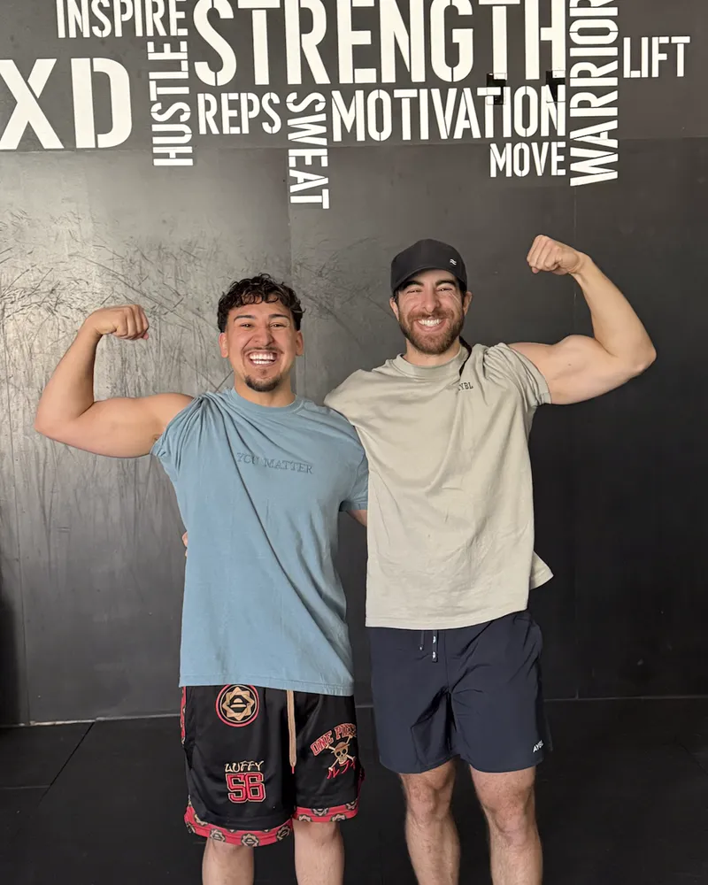
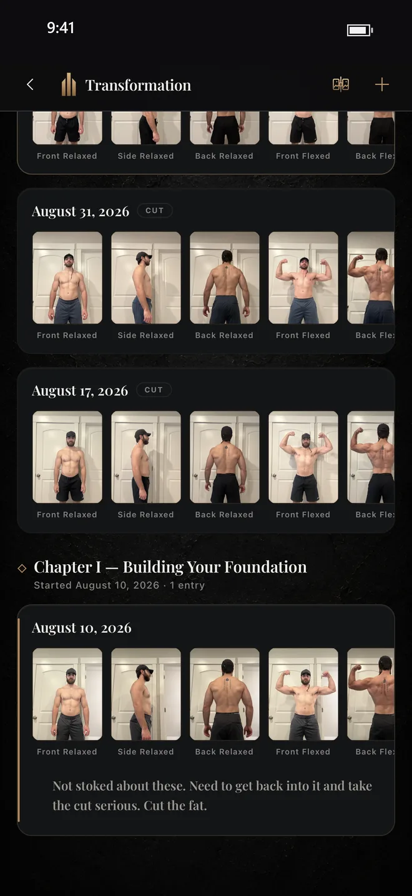
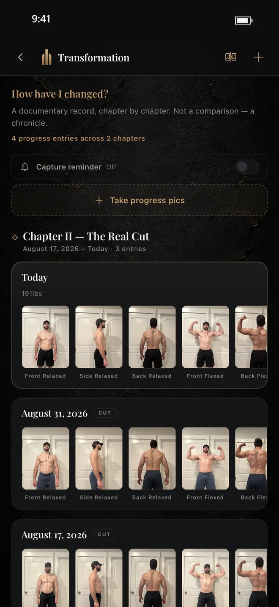

Your progress photos, the chapters of your life, the programs you finished, the squads you trained with, the PRs that mattered, all kept for life.
And it’s still one fast app for lifting, running, food and a coach. Miss a week and nothing is lost.
You're on the list. Your TestFlight invite goes to .
It’s free during the beta. After that, your training history stays free to read.
Holt is part of Forge AI.
Why I built Forge

“I’ve tried a lot of workout apps. I liked parts of each, but my training ended up scattered: progress pics in a photo album, numbers in spreadsheets, workouts in whichever app I was using. I wanted one place that kept all of it. A place where I could also cheer on my family and friends, and help push them toward their goals. So I built Forge.”
Isaiah Altamirano, founder
Five years of training. What does your app show you?
Most workout apps
Mar 14Bench Press135 × 8
Mar 16Goblet Squat50 × 10
Mar 18Run3.1 mi
Mar 19Deadlift185 × 5
Mar 21Bench Press135 × 8
…and 1,284 more rows like these.
Forge
The chapters of your life“The Return.” “Stronger Than Before.” You name them.
Progress photosKept in the chapter they belong to, not lost in your camera roll.
Honors you earnedYour first 5K. Ten workouts in a chapter.
Every program you finishedAnd how far each one moved you.
The squad you trained withThe people who were there for it.
Training
Log a set in one tap. Even offline.
Lifting or running, this is the screen you’ll live in. It’s quick between sets, maps your route on a run, and saves every rep as you go, even with no signal.
Finishing should feel like something. Press and hold to seal the workout and it joins your permanent record, with your volume, your time under iron, and how every lift compared with last time. It’s how you see progress that’s too slow to notice day to day.
Save any day as a template.
Nutrition
Eat for the gains you’re chasing.
Your food and your workouts, finally in one place. Log a meal in seconds and see at a glance whether you’ve eaten enough to recover, to build, or to lean out.
Coach Holt
Stuck on a lift? Holt has a fix.
Most plans don’t fail on day one. They stall in week five, when a lift stops moving or life gets in the way. Coach Holt reads your training, spots what’s stuck, and tells you what to do next. Nothing changes unless you say so.
From the beta
What testers are saying
★★★★★
“Just wanna say thank you for making this app. Really has helped me in my gym life and has given me guidance with it. Before I was scared to workout in front of others because I felt like I didn’t know what I was doing but having a program has boosted my confidence”
Moses R. · Beta tester★★★★★
“LOVE this app. I’ve used quite a few different apps for the gym and this beats them all. All the features in one app. I like how everything tracks and can customize it just how I like. Took me a week to get totally comfortable with all the features but totally worth it!”
Nate W. · Beta tester★★★★★
“Forge has made exercising a no brainer. I no longer have to plan what I’m going to workout, I can just clicked in and start the workout that was pre-programmed for me. No planning or thinking required. Super easy! Definitely recommend.”
Benjamin P. · Beta tester★★★★★
“Easily the best workout app I’ve used”
Brady P. · Beta tester


See how far you’ve come.
Take progress pics in the app and they’re kept in the chapter they belong to, next to the workouts and PRs from that stretch. Not lost in your camera roll.
Front, side and back, flexed or relaxed, in a few taps.
Add a note so you remember what that stretch felt like.
Miss a week. Keep everything you built.
Streaks punish you for one missed week. Forge doesn’t. Your rank measures years of training, not last week. Take a year off, come back, and it’s all right where you left it.
A chapter for every cut, comeback and first meet
A chapter is a stretch of training with a point to it, like “Coming Back From Injury” or “The Year I Got Serious.” You name it, you decide when it ends, and you write down what it meant.
Workouts, records, honors, photos and goals collect in the chapter you’re in.
Close it and it’s sealed. It can be added to, never rewritten.
Squads
Friends who notice when you skip.
The best motivation isn’t strangers. It’s the few people who notice when you skip. A squad is your small, private crew: see each other train, cheer each other on, and chase goals together. And if you’d rather go it alone, all of Forge works solo.
Questions
How do I get it?
Enter your email and we’ll send you an invite through TestFlight, Apple’s app for trying apps before they reach the App Store. Open the email on your iPhone and follow the link.
What does it cost?
It’s free during the beta. After that, your training history stays free to read.
Is it on Android?
Not yet. Forge is iPhone only for now.
Who sees my workouts?
Only your squad. No followers, no strangers, nothing public.
What if I take a break?
Nothing is lost. Your history, your chapters and your rank are right where you left them.
Your first workout is waiting.
Free during the beta. iPhone only, invite by email.
You're on the list. Your TestFlight invite goes to .